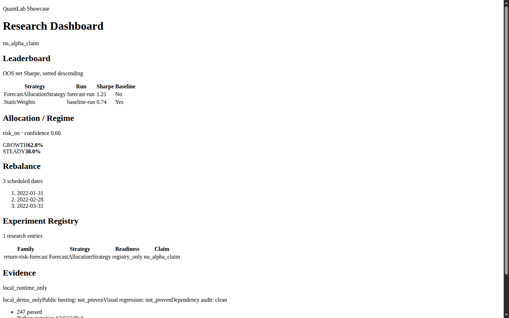

A portfolio-grade personal quant research lab: point-in-time data, vectorized backtesting, strategy comparison, and an honest, no-alpha-claim research dashboard.
One lab, two audiences — both served honestly.
available_date ≤ asof) prevents lookahead by construction.no_alpha_claim.Amazon-style backwards PR — written as if the lab has already succeeded.
Taipei, 2026 — Finance Algorithms today described QuantLab, a personal research platform that lets one person design, backtest, and compare investment strategies with the same point-in-time and out-of-sample discipline used by serious shops — while refusing to dress up synthetic experiments as alpha.
“The point was never to claim I beat the market,” the maintainer said. “The point was to build a lab where every number is reproducible, every backtest respects what I could actually have known at the time, and every demo says exactly how strong its evidence is.”
The problem: personal quant projects routinely leak future information, compare strategies in-sample, and present mock dashboards as if they were live products. The solution: QuantLab enforces available_date ≤ asof in the data layer, reports out-of-sample net metrics on a shared leaderboard, and caps every stakeholder-facing claim with explicit evidence labels. Today: nine spec epics are implemented and reviewed, 214 Python tests pass with one explicit optional PyTorch-lane skip, 23 frontend tests pass, the root Python lock excludes unpatched Torch, and a fixture-driven showcase dashboard renders the latest research summary.
Three audiences, straight answers.
It is a single Python 3.13 + Next.js workspace with uv and npm. CI-style gates (pytest, mypy, lint-imports, npm test/audit) run in seconds-to-minutes locally. No paid infra is required; external data sources are free (FRED/NOAA/Yahoo) and degrade per-source.
It is paper-only research with no trading execution and no credentials. Frontend audit reports 0 vulnerabilities, and the root Python lock no longer includes unpatched Torch in the default runtime. The architecture linter forbids the data/engine core from importing ML frameworks, keeping the backtest core deterministic.
It separates contracts, PIT data, a vectorized engine, strategy adapters, portfolio construction, and tracking into reviewed specs. Lookahead protection and out-of-sample net scoring are built into the engine, not bolted on per-experiment.
Accumulate real price vintages until the live-data backtest unblocks, prove public hosting + visual regression for the dashboard, and expand the model-family evaluation. See the Roadmap below.
One command produces a baseline-anchored OOS leaderboard; one command captures an immutable daily data snapshot with a machine-readable run report; one dashboard summarizes the latest research state — all without hand-rolling lookahead-safe plumbing.
Readiness badges copied from .agents/specs/**/review.md.
PIT data, vectorized engine, metrics, walk-forward, parallel run, local tracking.
Hedge strategy + LSTM adapter + baselines, ranked by OOS net Sharpe.
Vintage PIT loader, FRED proxies, source-health, snapshot report + ops gate.
Optimizer, multi-period allocation, regime rebalance selector, pyramid adapter.
First-regime, return/risk forecaster, robust optimizer, family evaluator.
Experiment registry, config catalog, checksum snapshot, dashboard bridge.
Read API + Next.js app: leaderboard, regime, rebalance, experiments, evidence. Browser visual + public-hosting content-hash probe proven.
Source-contract-first local CSV loader, two optional default-disabled slices.
Arithmetic + geometric order sizing FastAPI — immutable baseline, preserved.
MOCK_DOMINANT_EVIDENCE, no_alpha_claim). A real chromium-headless screenshot (browser-visual.png), repo-baseline pixel diff (browser-visual-diff.json), public-hosting content-hash probe (HTTP 200 plus deployed dataHash parity), GitHub Actions autonomous event=schedule dry-run proof (run 27392471359), CR-B12 scoped live write smoke, and CR-B19 FRED/Yahoo/NOAA source-quorum proof are now proven. CR-B20 proves Stooq restoration attempts fail closed without positive finite live close rows; Stooq remains governed separately.Real chromium-headless screenshot — frontend/out/browser-visual.png (proven, desktop-1440×900). The static export ships semantic HTML without the app stylesheet, so it renders unstyled by design.

From data capture to a stakeholder-readable summary.
flowchart LR
A["daily_snapshot.py\n(PIT capture)"] --> B["vintage loader\navailable_date ≤ asof"]
B --> C["A0 vectorized\nbacktest engine"]
C --> D["OOS-net leaderboard\n(vs baselines)"]
D --> E["E-lite registry\n(lineage)"]
E --> F["Showcase read API\n/api/showcase"]
F --> G["Next.js dashboard\nstatic export"]
style A fill:#005EB8,color:#fff
style D fill:#97D700,color:#1a2a00
style G fill:#04A9FB,color:#022
Resolved since last check vs still open — no false greens.
browser-visual.png proven) visualpublic-hosting-probe.json) hosting221 / 1,296,000 mismatched pixels at threshold 0.001) visual27392471359, artifact snapshot-schedule-proof) opsfred_FEDFUNDS write, then same-day skip) opsnot_proven) opsdocs/ manual + review + generation guides docsnot_proven) by dashboard contract LowISSUE-B3-001) LowNext milestones, in order.
run_vintage_slice.py live backtest.